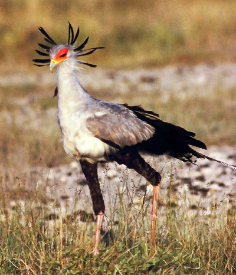
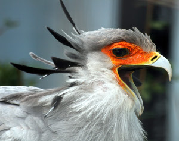

Coming to an Imaginary Museum
The secretary bird (Sagittarius Serpentarius) is one of the largest predatory birds in Africa. It is usually found on the open plains and savannah of the sub-Saharan region of Africa. While it can fly, most of its time is spent on the ground, where it hunts its favoured prey. These majestic birds are most well known for their strange hunting practice. They use their long legs and sharp talons to kick the snakes they hunt, unleashing a devastating blow and often killing the snake instantly. Snakes make up the majority of the Secretary Bird’s diet.
The biggest thing that makes the Secretary Bird stand out, is its massive, crane-like legs. This differentiates it from other large predatory birds, in that the Secretary Bird is one of the only primarily terrestrial bird of prey. Everything from insects to mammals to reptiles are part of this predator’s preferred diet. These birds also have a slightly strange hunting style, opting to flush out prey by using their long legs to stomp the vegetation in grassy areas, before delivering their trademark kick. An adult male Secretary Bird can strike with a force equal to up to 5 times their body weight.
Come to The Imaginary Museum to see Secretary Birds up close. This exhibit is devoted to the preservation and management of Secretary Birds, whose numbers have dwindled over the past century. 50% of proceeds from this exhibit go towards wildlife organizations that can help protect these majestic birds.
In this exhibit, visitors can personally observe the birds of prey. Housing the largest collection of aviary skeletons in the universe, we at the Imaginary Museum are showcasing all aspects of the Secretary Bird. Learn everything from their skeletal structure, to their mating habits to their hunting patterns, and everything between. Winners of the raffle can even take home their very own Secretary Bird.
This exhibit will be open from January 1st 2018 all the way through January 2nd 3018.